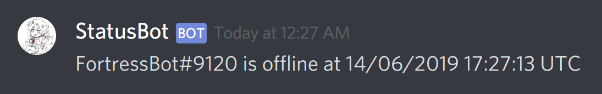

<section class="hero is-medium is-iron-red-white-e">
    <div class="hero-body">
        <div class="container has-text-centered">
            <h1 class="title is-1">StatusBot</h1>
            <p class="subtitle is-4">
                A special purpose discord bot that notifies you if other bots go offline
            </p>
            <div class="has-text-centered">
                <div class="field is-grouped is-grouped-centered">
                    <p class="control">
                        <a href="https://github.com/StahlFerro/StatusBot" class="button is-github-black is-large">
                            <span class="icon"><i class="fab fa-github"></i></span><span>Github</span></a>    
                    </p>
                    <p class="control">
                        <a href="https://statusbot.readthedocs.io/en/latest/" class="button is-iron-red is-large">
                            <span class="icon"><i class="fas fa-book"></i></span><span>Documentation</span>
                        </a>
                    </p>
                </div>
            </div>
            <br/>
            <p>
                <figure class="tooltip is-tooltip-bottom" data-tooltip="It's dead Jim">
                    
                </figure>
            </p>
        </div>
    </div>
</section>
